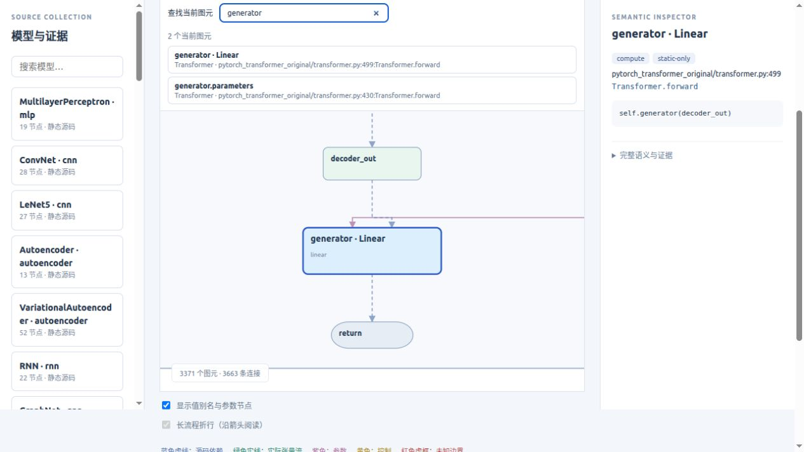
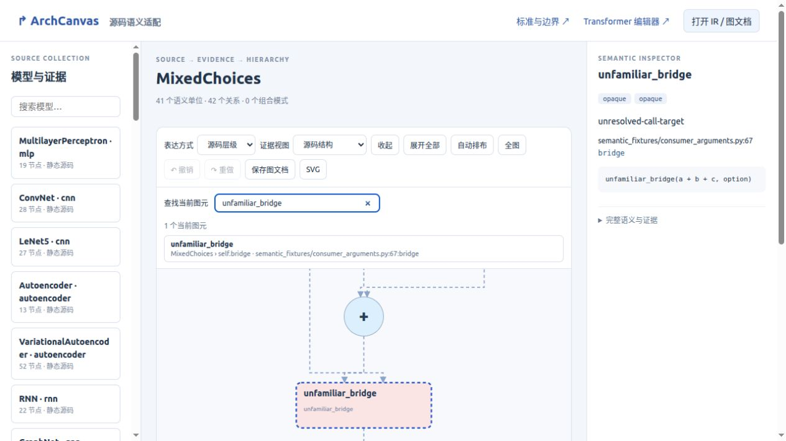
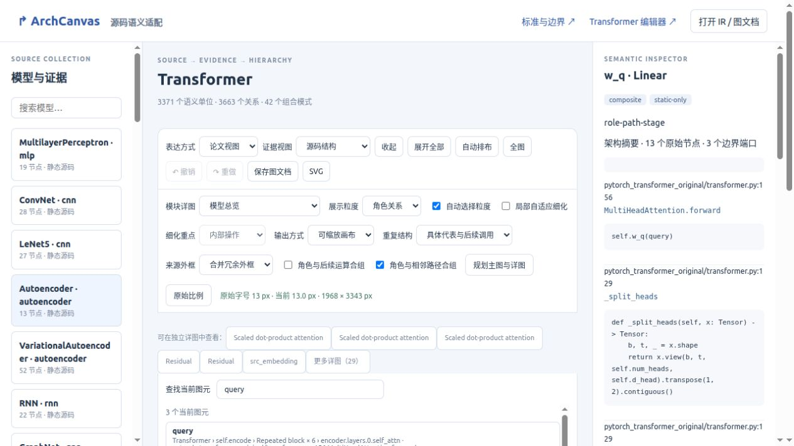

从语义主图进入最细源码事实
新增通用“查找当前图元”：按名称、模块路径和源码位置检索当前可见对象，以原始比例定位。
展开外框定位标题；查找仅改变镜头和证据面板。标题区域继续允许连线穿行，计算节点仍避让。
本轮改善的是导航与验证覆盖。未新增语义推断或论文版式优化；整体目标仍未完成。
完整源码的实际证据
3371 个节点 / 3663 条边，10925 段正交线，节点侵入为 0。画布 3026 × 245352 px。
实际编辑器折叠后撤销，恢复 SVG 与基线逐字节相同；定位前后保存文档完全一致。三次 CLI 投影及路由的几何哈希相同。本机 CLI 中位数：投影 1145.9 ms，路由 2595.0 ms。这些数值不代表浏览器渲染延迟。
定位最细源码节点
实际编辑器按 generator 定位底部节点，保持原始字号；整图和端口关系不变。

陌生计算与未知边界
MixedChoices 的 41 个节点 / 42 条边：定位 unfamiliar_bridge，opaque 及条件边界保留。

返回中间语义主图
65 个图元 / 76 条边：三个 query 按具体模块路径区分，主图 SVG 与上一轮逐字节一致。

可复核产物
806 项既有测试通过。独立审核还拒绝了缺失节点、缺失边、错误端口说明、移动节点、同步篡改 SVG 与布局以侵入节点五种反例。
未认证全图所有边之间的交叉或整体可读性，未测量浏览器事件／绘制耗时与帧率，也未证明所有展示粒度的一次“展开全部”都暴露全部原始事实。阅读方向、长上下文路径和局部细节密度仍待改进。